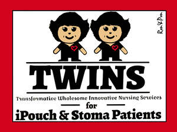
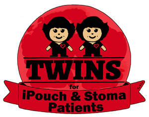
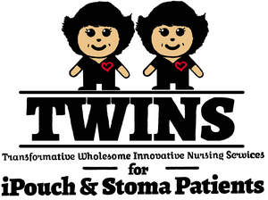

Trade Mark Journal No.2025/021 23 May 2025
UK00004156328 5 February 2025 (9,16,41)
Mark 1

Mark 2
Mark 3

Mark 4

- Class 9
- Motion pictures; Downloadable digital photos; Medical simulators [teaching aids]; Interactive databases; Data and file management and database software; Downloadable e-books; Downloadable videos; Downloadable podcasts; Downloadable videocasts; Downloadable publications; Downloadable video files; Downloadable movies; Downloadable applications; Downloadable postcards; Downloadable posters; Downloadable electronic brochures; Downloadable films; Downloadable video recordings; Downloadable electronic newsletters; Downloadable electronic books; Electronic publications, downloadable; Publications (Electronic -), downloadable; Downloadable electronic publications; Electronic publications (downloadable); Downloadable application software; Downloadable digital assets; Downloadable image files; Publications in electronic format [downloadable]; Downloadable software applications; Downloadable publications in electronic form; Downloadable mobile applications; Digital books downloadable from the Internet; Downloadable educational media; Downloadable video recordings featuring music; Downloadable educational course materials; Downloadable sound recordings; Downloadable templates for designing audiovisual presentations; Computer software applications, downloadable; Downloadable series of children’s books; Downloadable application software for smart phones; Computer software to automate data warehousing; Downloadable computer software for the management of data; Databases; Computer databases; Databases (electronic); Electronic databases; Data storage devices; Data storage media; Data storage programs; Data storage devices and media; Electronic data storage media; Data processing equipment; Data processing systems; Data processing programs; Electronic data processing equipment; Real-time data processing apparatus; Simulation software; Simulation software [training]; Simulation apparatus; Virtual reality software for simulation; Virtual reality software for medical teaching; Audio books; Teaching instruments; Instructional and teaching apparatus and instruments; Teaching and instructional apparatus and instruments; Teaching apparatus and instruments; Electronic instructional and teaching apparatus and instruments; Teaching apparatus; Teaching and instructional apparatus; Audio-visual teaching apparatus; Audiovisual teaching apparatus; Audio visual teaching apparatus; Publications in electronic format; Electronic publications; Educational software; Children's educational software; Educational computer applications; Electronic book reader covers; Video films; Video recordings; Training software; Medical training simulators; Software for designing online advertising on websites; Software for embedding online advertising on websites; Interactive electronic publications; Computer software programs for spreadsheet management; Computer software for creating searchable databases of information and data; Talking books; Augmented reality software for use in mobile devices for integrating electronic data with real world environments; Computer game software, downloadable.
- Class 16
- Printed publications; Publications (Printed -); Graphic prints; Printed paper labels; Lithographic prints; Photo prints; Printed books; Printed art reproductions; Printed stationery; Printed flyers; Printed brochures; Cartoon prints; Printed booklets; Photographic prints; Printed advertisements; Color prints; Printed advertising boards of paper; Photographs [printed]; Printed photographs; Art prints; Graphic art prints; Printed newsletters; Forms, printed; Printed forms; Printed periodical publications; Printed programmes; Printed pamphlets; Fine art prints; Printed manuals; Teaching materials; Teaching manuals; Instructional and teaching materials; Instructional and teaching material; Instructional manuals for teaching purposes; Paper teaching materials; Printed teaching activity guides; Printed teaching materials; Teaching materials [except apparatus]; Printed teaching material; Magazines; Magazines [periodicals]; Advertising publications; Printed periodicals; Promotional publications; Printed promotional material; Advertising posters; Advertising pamphlets; Stationery; Paper stationery; Stickers [stationery]; Office stationery; Stationery folders; Writing stationery; Adhesives for stationery; Pads [stationery]; Stationery and educational supplies; Pins [stationery]; Pocket books [stationery]; Self-adhesive tapes for stationery or household purposes; Self-adhesive tapes for stationery and household purposes; Adhesives for stationery or household use; Notepads; Posters; Poster books; Poster magazines; Printed informational flyers; Display banners of paper; Paper banners; Banners of paper; Illustration boards; Flyers; Printed visuals; Display banners made of cardboard; Informational flyers; Printed leaflets; Picture books; Graphic reproductions; Reproductions (Graphic -); Pictorial prints; Graphic prints and representations; Art pictures; Printed informational sheets; Labels of paper or cardboard; Periodical publications; Annuals [printed publications]; Periodical magazines; Magazine supplements for newspapers; Educational equipment; Educational publications; Educational and instructional material; Educational books; Anatomical models for instructional and educational purposes; Printed seminar notes; Book covers; Book marks; Book binders; Printed guides; Printed reports; Training manuals; Medical journals; Photographic reproductions; Printed educational materials; Instructional and teaching material (except apparatus); Instructional materials; Manuscript books; Publication paper; Books; Series of non-fiction books; Non-fiction books; Guide books; Resource books; Writing books; Fiction books; Story books; Comic books; Sketch books; Coloring books; Note books; Information books; Colouring books; Drawing books; Baby books; Baby books [storybooks]; Atlases; Printed diagrams; Printed charts; Study guides; Paper for printing photographs; Diagrams; Flash cards; Trivia cards; Picture cards; Storybooks; Drawings; Sketch boards.
- Class 41
- Training services for nurses; Medical training and teaching; Publishing; Publishing of journals; Publication of journals; Publication of books; Books (Publication of -); Book and review publishing; Book publishing; Publishing of stories; Publishing of documents; Magazine publishing; Publication of photographs; Publishing of books; Publication of books, reviews; Publishing of reviews; Publishing of web magazines; Publication of text books; Publication of magazines; Magazines (Publication of -); Publishing, reporting, and writing of texts; Publishing of books and reviews; Publication of texts; On-line publication of electronic books and journals [not downloadable]; Publication and editing of printed matter; Publishing of printed matter; Publication of textbooks; Publishing of books, magazines; Publication of printed matter, other than publicity texts; Publication of printed matter and printed publications; Publication of brochures; Publishing of electronic publications; Publication of electronic books and journals on-line; On-line publication of electronic books and journals; Publication of audio books; Online publication of electronic books and journals; Publication of electronic books and journals online; Publication of printed matter; Services for the publication of books; Publication of booklets; Writing and publishing of texts, other than publicity texts; Publishing of electronic books and journals on-line; Publishing of electronic books and journals online; Publication of posters; Publication of books, magazines, almanacs and journals; Publishing of medical publications; Publication of educational books; Publication of leaflets; Publication of manuals; Publication of printed matter, other than publicity texts, in electronic form; On-line publication of electronic books and journals (non-downloadable); Multimedia publishing of books; Publication of electronic books and periodicals on the Internet; Services for the publication of guide books; Online electronic publishing of books and periodicals; Publication of educational printed matter; Texts (Publication of -), other than publicity texts; Publication of texts, other than publicity texts; Publication of multimedia material online; Publication of educational texts; On-line publishing services; Publication of newspapers, periodicals, catalogs and brochures; Electronic publication; Preparation of texts for publication; Providing on-line electronic publication [not downloadable]; Electronic publishing; Publishing of educational material; Publication of printed matter relating to education; Publishing services; Multimedia publishing; Publication of texts in the form of electronic media; Providing continuing nursing education courses; Medical education services; Providing of training in the field of health care and nutrition; Education; Health education; Education and training; Education and instruction; Education services; Education, teaching and training; Training and education services; Education and training services; Education and instruction services; Educational services for providing courses of education; Provision of education courses; Teaching of diet education; Provision of training and education; Provision of education and training; Providing of education; Education information; Information (Education -); Computer education training; Adult education services; Education and training consultancy; Physical health education; Online education services; Education services relating to nutrition; Education services relating to health; Providing continuing medical education courses; Dietary education services; Adult education services relating to medicine; Research in the field of education; Education services relating to medicine; Educational and teaching services; Education services in the nature of courses at the university level; Educational and training services relating to healthcare; Publication of printed directories; Education examination; Entertainment, education and instruction services; Teaching; Publication of electronic magazines; Educational seminars; Educational services; Educational examination; Educational information; Religious educational services; Educational demonstrations; Workshops for educational purposes; Educational consultancy; Development of educational materials; Educational testing; Organization of exhibitions for cultural or educational purposes; Exhibitions (Organization of -) for cultural or educational purposes; Organization of exhibitions for cultural and educational purposes; Examination services (Educational -); Planning of lectures for educational purposes; Educational assessment services; Organization of exhibitions for educational purposes; Organization of educational conferences; Providing educational demonstrations; Development of educational courses and examinations; Arranging of exhibitions for cultural or educational purposes; Secondary school educational services; Conducting of educational courses; Educational services provided by institutes of higher education; Organisation of continuing educational seminars; Educational services relating to religious development; Publication of educational materials; Organization of educational congresses; Educational services provided for teachers of children; Rental of educational materials; Educational services for teaching acting; Conducting of educational courses in science; Organisation of exhibitions for educational purposes; Organisation of animal exhibitions for cultural or educational purposes; Arranging of presentations for educational purposes; Organising of educational lectures; Organisation of educational shows; Organisation of congresses and conferences for cultural and educational purposes; Conducting of educational conferences; Leasing of educational material; Educational services provided by a school; Providing educational entertainment services for children in after-school centers; Developing educational manuals; Arranging of exhibitions for educational purposes; Arranging of demonstrations for educational purposes; Organising of shows for educational purposes; Religious education; Hire of educational materials; Conducting educational support programmes for healthcare professionals; Conducting of educational courses in engineering; Organising of exhibitions for educational purposes; Educational and instruction services relating to sport; Organisation of exhibitions for cultural or educational purposes; Exhibition services for educational purposes; Conducting of exhibitions for educational purposes; Exhibitions (Conducting -) for educational purposes; Conducting of educational events; Conducting of educational courses in business; Educational establishments providing courses of instruction (Services of -); Educational services provided to industry; Educational services provided by schools; Provision of educational examination facilities; Cultural, educational or entertainment services provided by art galleries; Educational research; Educational instruction; Organising of educational seminars; Organisation of educational seminars; Arranging and conducting of educational courses; Conducting seminars; Arranging and conducting of workshops; Arranging and conducting workshops; Arranging and conducting of classes; Arranging and conducting of tutorials; Arranging and conducting of training seminars; Conducting of courses; Workshops (Arranging and conducting of -) [training]; Arranging and conducting of workshops [training]; Arranging and conducting of training workshops; Arranging and conducting of seminars and workshops; Arranging and conducting of workshops and seminars; Arranging and conducting of training courses; Conducting workshops [training]; Conducting training seminars; Arranging and conducting conferences and seminars; Arranging and conducting of lectures for educational purposes; Conducting training seminars for clients; Arranging professional workshop and training courses; Arranging of workshops and seminars; Arranging of workshops; Conducting courses, seminars and workshops; Workshops for training purposes; Seminars; Organisation of training seminars; Organisation of seminars; Practical training [demonstration]; Training (Practical -) [demonstration]; Organising of education seminars; Conducting of instructional seminars; Providing online training seminars; Organisation of Webinars; Organisation of training courses; Publication of training manuals; Arranging and conducting of seminars; Arrangement of seminars for educational purposes; Video editing; Film editing; Editing of video recordings; Audio and video editing services; Post-production editing services in the field of music, videos and film; Audio and video production, and photography; Audio, video and multimedia production, and photography; Digital video, audio and multimedia entertainment publishing services; Video production; Production of video films; Production of videos; Production of video and audio recordings; Production of educational sound and video recordings; Production of training videos; Video recording services; Production of training films; Production of video recordings; Organisation of seminars and conferences; Conducting workshops and seminars in personal awareness; Arranging of presentations for training purposes; Arranging and conducting of lectures for training purposes; Organisation of seminars relating to training; Conducting of instructional seminars relating to time management; Production of course material distributed at professional seminars; Postgraduate training courses; Presentation of radio programmes; Arranging, conducting and organization of seminars; Conducting training courses relating to diet online; Written text editing; Editing of written text; Photo editing; Film editing (Photographic -); Editing of written texts, other than publicity texts; Training courses; Training; Provision of training courses; Training courses (Provision of -); Written training courses; Providing courses of training; Training and further training consultancy; Training and instruction; Provision of training courses in personal development; Practical training; Courses (Training -) relating to medicine; Providing of continuous training courses; Coaching [training]; Courses (Training -) relating to research and development; Provision of training; Continuous training; Practical training services; Advanced training; Training services; Computerised training; Computer training; Provision of online training; Organisation of training; Production of course material distributed at professional courses; Adult training; Training in the field of medicine; Conducting instructional courses; Educational and training services; Providing of training; Providing training; Health and wellness training; Health and fitness training; Health club services; Education services relating to physical fitness; Health club services [exercise]; Vocational education relating to avoidance of health related problems; Provision of educational health and fitness information; Education and training in the field of occupational health and safety; Training services relating to health and safety; Provision of educational services relating to health; Production of live television programmes for education; Providing online courses of instruction; Online casino services; Golf courses; Provision of online tutorials; Providing online games; Online academic library services; Courses (Training -) relating to banking; Residential education courses; Preparation of educational courses and examinations; Providing online videos, not downloadable; Arranging for students to participate in educational courses; Courses (Training -) relating to science; Educational courses relating to insurance; Training courses in engine design; Providing online electronic publications, not downloadable; Education courses relating to the travel industry; Conducting training courses relating to nutrition online; Online digital publishing services; Publishing services (including electronic publishing services); Electronic text publishing services; Providing online electronic publications; Online publication of electronic newspapers; Providing online publications, not downloadable; Providing on-line electronic publications, not downloadable; Providing on-line videos, not downloadable; Providing on-line publications (not downloadable); Electronic publications (not downloadable); Providing online images, not downloadable; Providing on-line publications; Photographic reporting; Photography; Provision of educational information; Provision of educational services relating to diet; Educational information services; Education information services; Publication of medical texts; Publishing of journals, books and handbooks in the field of medicine; Library services provided by means of a computerised database; Dissemination of educational material; Publication of educational teaching materials; Training in electronics; Staff training services; Personnel training; Providing computer-delivered educational testing and assessments; Training in communication techniques; Provision of medical instruction courses; Provision of courses of instruction; Organisation of courses using open learning methods; Organisation of courses using programmed learning methods; Organisation of courses using distance learning methods; Personal development training; Personal development courses; Seminars (Arranging and conducting of -); Arranging and conducting seminars; Arranging, conducting and organisation of workshops; Demonstration [for instructional purposes]; Providing training and educational examination for certification purposes; Conducting of educational seminars relating to medical matters; Planning of conferences for educational purposes; Planning of seminars for educational purposes; Advice relating to medical training; Coaching; Coaching services; Electronic online publication of periodicals and books; Publication of periodicals and books in electronic form; Publication of instructional literature; Publishing of instructional books; Publishing services for books and magazines; Writing of texts; Editing of written texts; Physical education facilities (Provision of -); Motion picture production.
Transformative Wholesome Innovative Nursing Services for iPouch & Stoma Patients Ltd